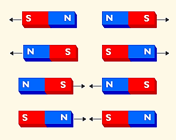
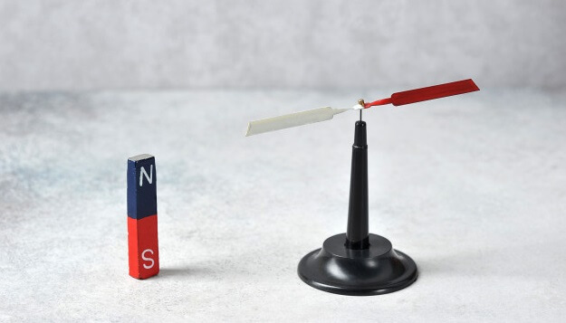

I. Nam châm là gì?
Nam châm là vật có khả năng hút các vật bằng sắt và một số vật khác. Khi được đặt tự do, nam châm luôn định hướng theo hướng Bắc – Nam.
Nam châm có hai cực:
- Cực Bắc (N - North).
- Cực Nam (S - South).
Để phân biệt hai cực, người ta thường sơn cực Bắc màu đỏ và cực Nam màu xanh.
Một số loại nam châm:
- Nam châm thẳng.
- Nam châm chữ U (móng ngựa).
- Nam châm viên.
II. Tính chất từ của nam châm
Nam châm có từ tính, có khả năng hút các vật bằng sắt và một số hợp kim của sắt.
Một số vật liệu có từ tính:
- Sắt.
- Thép.
- Niken.
- Coban.
Một số vật liệu không có từ tính:
- Nhôm.
- Đồng.
- Gỗ.
- Nhựa.
Nam châm hút mạnh nhất ở hai đầu cực.
Kim nam châm đặt cân bằng trên mũi nhọn luôn chỉ theo hướng Bắc – Nam.
III. Tương tác giữa hai nam châm
Khi đưa hai thanh nam châm lại gần nhau:
- Hai cực khác tên hút nhau.
- Hai cực cùng tên đẩy nhau.


IV. Định hướng của kim nam châm tự do
Kim nam châm (nam châm thử) đặt gần nam châm sẽ chịu tác dụng của từ trường và quay theo một hướng xác định.
Nếu để tự do, kim nam châm luôn định hướng theo hướng Bắc – Nam.

Ghi nhớ
- Nam châm có hai cực: Bắc (N) và Nam (S).
- Nam châm hút mạnh nhất ở hai đầu cực.
- Hai cực cùng tên đẩy nhau, hai cực khác tên hút nhau.
- Kim nam châm tự do luôn chỉ theo hướng Bắc – Nam.